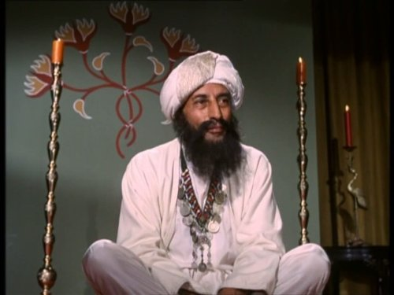
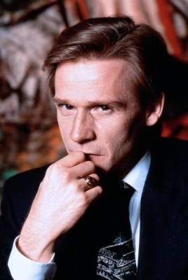
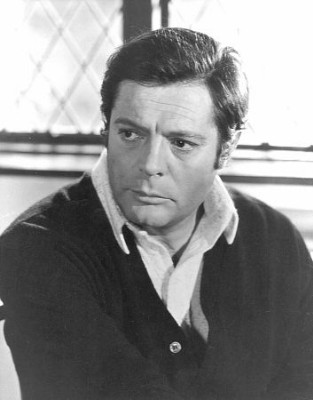
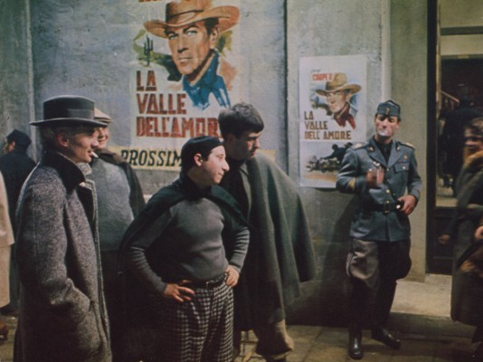

#10239 Fellinis Roma
Alternativ: Roma (Englischer Titel)


 IMDB-Wertung: 7.4 / 10
IMDB-Wertung: 7.4 / 10  Metascore: 0
Metascore: 0 
Episodenhaft erzählter Film, der halb-autobiographisch Fellinis Umzug von Rimini nach Rom erzählt. Die Stadt selber spielt dabei die größte Rolle, Verkehrschaos, U-Bahn-Bau, Prostitution und Vergnügungssucht im Rom der 30er Jahre. Mit Peter Gonzales in der Rolle des jungen Fellini.
Jahr: 1972
Dauer: 120 Minuten
FSK: 16
Land: Italien Studio: Arthaus FilmverleihTonspuren:
Untertitel: Deutsch,
Auflösung: 1080p (1920x1040) Größe: 7833 MB
Genre: Drama, Komödie
Regisseur: Federico Fellini
Drehbuch: Federico Fellini, Bernardino Zapponi, Federico Fellini, Bernardino Zapponi
Soundtrack: Nino Rota
Darsteller:
-  Marne Maitland als Guide in the Catacombs
- Elisa Mainardi als Pharmacist's wife / Cinema spectator
- Anna Magnani als Anna Magnani
- Gore Vidal als Himself
 Feodor Chaliapin Jr. als Actor Playing Julius Cesar (uncredited)
Feodor Chaliapin Jr. als Actor Playing Julius Cesar (uncredited)-  Dennis Christopher als The Hippie (uncredited)
 Franco Citti als Man at Restaurant (uncredited)
Franco Citti als Man at Restaurant (uncredited)- John P. Dulaney als Jeep driver (uncredited)
- Federico Fellini als Himself (uncredited)
- Eleonora Giorgi als Motorbike Rider (uncredited)
-  Marcello Mastroianni als Himself (uncredited)
- Chuck McCann als Himself (uncredited)
- Elliott Murphy als Extra (uncredited)
- Paola Natale als (uncredited)
- Cassandra Peterson als (uncredited)
- Alberto Sordi als Himself - Interviewé (uncredited)
- Nino Terzo als Trattoria Waiter (uncredited)
-  Alvaro Vitali als Alvaro - Tap Dancer at Teatrino (uncredited)
- Peter Gonzales Falcon als Fellini, Age 18
- Fiona Florence als Dolores - Young Prostitute
- Britta Barnes als
- Pia De Doses als Princess Domitilla
- Renato Giovannoli als Cardinal Ottaviani
- Stefano Mayore als Fellini as a Child
- Galliano Sbarra als Music Hall Compere
- Ginette Marcelle Bron als
- Alfredo Adami als Widowers' Member at Teatrino (uncredited)
- Sbarra Adami als (uncredited)
- Bireno als (uncredited)
- Luisa Bixio als Audience Member at Teatrino (uncredited)
- Aristide Caporale als Giudizio (uncredited)
- Angelo Casadei als Tourist (uncredited)
- Gianluigi Chirizzi als Filippetto - Aristocrat (uncredited)
- Dante Cleri als Cinema Spectator with Family (uncredited)
- Nancy Cohen als American Teenager (uncredited)
- Angela De Leo als (uncredited)
- Olga De Marco als Audience Member at Teatrino (uncredited)
- Rolando De Santis als Audience Member at Teatrino (uncredited)
- Maria De Sisti als Owner of the Inn (uncredited)
- Mario Del Vago als Widowers' Member at Teatrino (uncredited)
- Francesco Di Giacomo als Man at the Brothel (uncredited)
- Alberigo Donadeo als Passerby (uncredited)
- Andrea Fantasia als Man with Net on Head in the Shelter (uncredited)
- Libero Frissi als (uncredited)
- Nella Gambini als Motorbike Rider (uncredited)
- Norma Giacchero als Interviewer (uncredited)
- Veriano Ginesi als Audience Member at Teatrino (uncredited)
- Gudrun Mardou Khiess als (uncredited)
- John Francis Lane als Himself (uncredited)
- Franco Magno als The President (uncredited)
Datei: X:\1972\Fellinis Roma (1972, FSK16, 1920x1040).mkv seit 25.12.2018
Festplatte: HD 1971-1979
 Es gibt insgesamt 26 Filme in der Gruppe '1972'
Es gibt insgesamt 26 Filme in der Gruppe '1972'